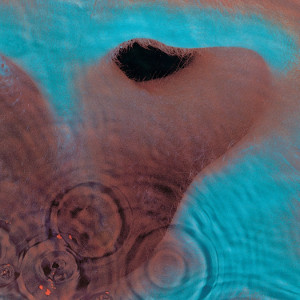
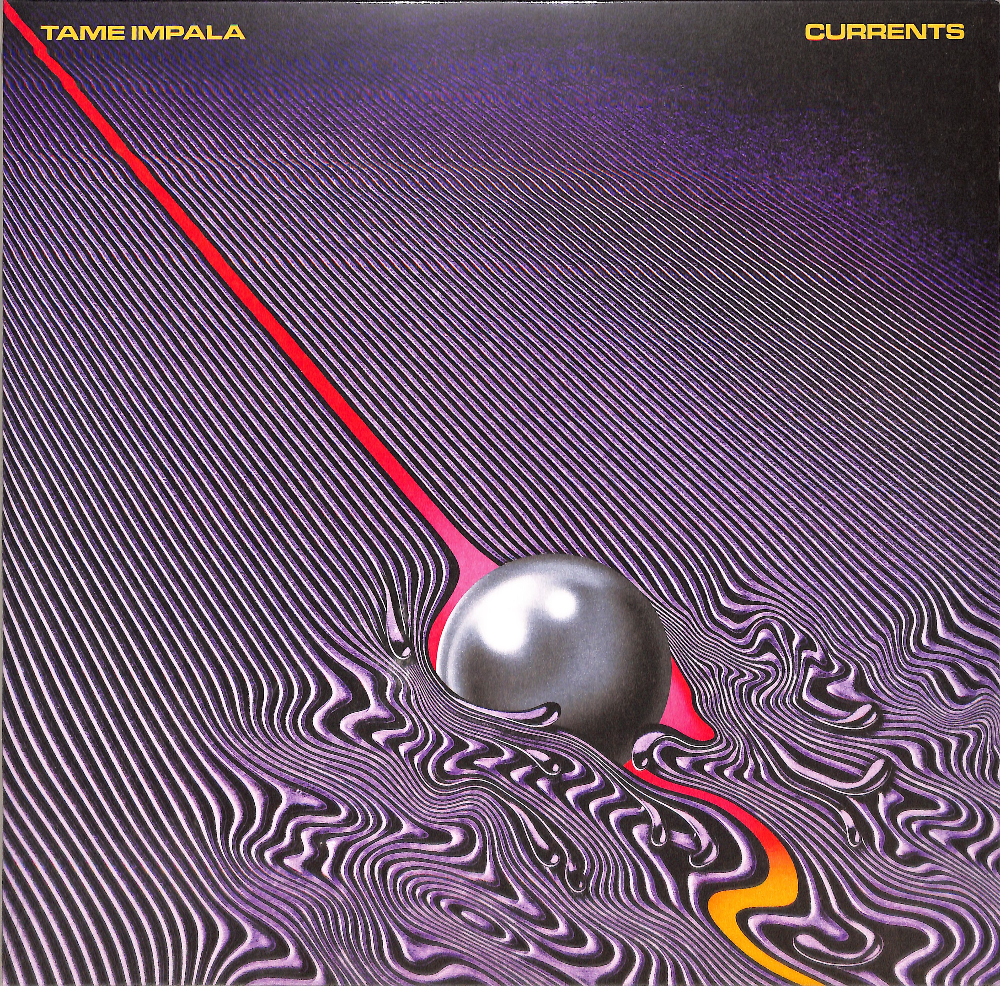

| Tipper | Pink Floyd | Tame Impala | |
|---|---|---|---|
| Genre | Downtempo Electronic | Classic Psychedelic Rock | Modern Psychedelic Rock |
| My Favorite Albums |
Forward Escape 2015 |
Meddle 1971  |
Currents 2015  |
| Track Listing |
1.Portal Spillage 03:00
2.Dreamsters - 05:29 "> 3.Homage Sliders - 05:00 4.Table Flipping - 04:22 5.Gulch - 03:56 6.Grabbers Holders - 04:37 7.The Bedraggling - 04:08 8.Life Raft For A Death Trip - 05:13 9.The Re-Up - 03:53 10.Apex Of The Vortex - 02:23 11.Rip Cord - 06:12 12.Reverse Dross Maneuver - 05:42 |
1.One Of These Days - 5:50
2.A Pillow Of Winds - 5:10 3.Fearless - 6:08 4.San Tropez - 3:42 5.Seamus - 2:09 6.Echoes - 23:31 |
1. Let It Happen - 7:47
2. Nangs - 1:47 3. The Moment - 9:36 4. Yes I'm Changing - 13:51 5. Eventually - 18:22 6. Gossip - 23:41 7. The Less I Know The Better - 24:36 8. Past Life - 28:12 9. Disciples - 32:00 10. 'Cause I'm A Man - 33:49 11. Reality In Motion - 37:51 12. Love/Paranoia - 42:03 13. New Person, Same Old Mistakes - 45:09 |
| Live Video |
|
|
|
| About Info |
David Tipper1997-Present London, England My Top 3 Albums |
Pink Floyd1964-Present London, England My 3 Albums |
Tame Impala2007-Present Perth, AUstralia My Top 3 Albums |
| Tipper | |
|---|---|
| Genre | Downtempo Electronic |
| My Favorite Album |
Forward Escape 2015 |
| Track Listing |
1.Portal Spillage 03:00
2.Dreamsters - 05:29 3.Homage Sliders - 05:00 4.Table Flipping - 04:22 5.Gulch - 03:56 6.Grabbers Holders - 04:37 7.The Bedraggling - 04:08 8.Life Raft For A Death Trip - 05:13 9.The Re-Up - 03:53 10.Apex Of The Vortex - 02:23 11.Rip Cord - 06:12 12.Reverse Dross Maneuver - 05:42 |
| Live Video |
|
| About Info |
David Tipper1997-Present London, England My Top 3 Albums |
| Pink Floyd | |
| Genre | Classic Psychedelic Rock |
| My Favorite Album |
Meddle 1971 |
| Track Listing |
1.One Of These Days - 5:50
2.A Pillow Of Winds - 5:10 3.Fearless - 6:03 4.San Tropez - 3:42 5.Seamus - 2:09 6.Echoes - 23:31 |
| Live Video |
|
| About Info |
Pink Floyd1964-Present London, England My Top 3 Albums |
Tame Impala |
| Genre | Modern Psychedelic Rock |
| My Favorite Album |
Currents 2015 |
| Track Listing |
1. Let It Happen - 7:47
2. Nangs - 1:47 3. The Moment - 9:36 4. Yes I'm Changing - 13:51 5. Eventually - 18:22 6. Gossip - 23:41 7. The Less I Know The Better - 24:36 8. Past Life - 28:12 9. Disciples - 32:00 10. 'Cause I'm A Man - 33:49 11. Reality In Motion - 37:51 12. Love/Paranoia - 42:03 13. New Person, Same Old Mistakes - 45:09 |
| Live Video |
|
| About Info |
Tame Impala2007-Present Perth, AUstralia My Top 3 Albums |